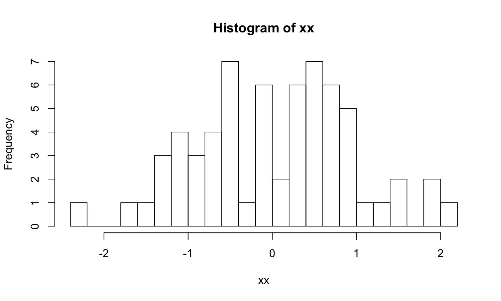

top_with_dots(matrix(rnorm(100), nrow = 10), n = 8, breaks = 20)

[,1] [,2] [,3] [,4] [,5] [,6]
[1,] -0.8746819 0.43070060 -1.78152974 -0.4608630 -0.5550150 0.2353034
[2,] 0.5338362 -0.08362546 -0.60826410 -0.7200107 -1.3092591 0.3528392
[3,] 2.1562944 -0.46579511 -0.54332229 0.4905042 -0.5304289 1.2439987
[4,] -1.1775097 -0.10122746 -0.71760396 -1.2552802 -0.1478829 -0.6471428
[5,] 0.8100326 0.72563753 -0.07413683 0.3466218 -1.5637899 -0.9593877
[6,] -0.5455716 -2.30561312 -1.34087133 -0.4640118 0.7752941 -0.1024844
[7,] 1.8037291 1.44941958 0.46880698 -1.0957875 0.2465313 -1.0949456
[8,] 1.4813030 1.80679156 0.77332700 0.2861456 0.4761782 0.5431295
[,7] [,8]
[1,] -1.12872013 -0.95068125
[2,] -0.08135823 0.03272484
[3,] -0.39892633 0.98048707
[4,] 0.58926791 0.94620500
[5,] 1.12408303 0.65834998
[6,] 0.80660748 0.05975170
[7,] 0.75217120 0.34819509
[8,] 0.98204041 0.62421190